第一章
介绍
这门课程与 HackTown 的每门课程一样，都是基于我作为网络犯罪分子进行操作时的经验，以及我曾经在网络钓鱼方面取得成功的技术、策略和程序。我是一名成功的网络犯罪分子，多年前退休，兑现了我通过网络犯罪获得的利润并享受了 DAT 加密货币的繁荣！我已经在生活中飘荡了很长一段时间，手头上有太多时间从来都不是一件好事。因为我一直很喜欢写作，所以我围绕我作为网络犯罪分子的经历设计了这些课程，让您有机会复制我的策略、技术和程序，让您自己体验财务自由。
首先，没有一种做事方式。当涉及到网络犯罪时，这些课程不是法律术语，但这是从我的角度来看，所以如果你有什么要补充的，有更好的解释方式，或者任何你认为我不知道的与网络犯罪有关的东西这些课程中的主题给我发了一封该死的电子邮件，让我知道什么是 WAT。这样我们就可以保持更新，让每个人都能享受并在他们的家乡举办一场他妈的表演。HackTown 将为您提供有关网络战的正确信息，这正是您想要学习的内容。干得好，我的朋友，你找到了这个地方。
假设您具有本课程中使用的黑客技术、行话、兴趣和术语的一般知识。本文档已经过审核，但可能存在一些语言和语法错误，因为翻译有时会被误解。如果您遇到错误（拼写或语法）或您认为可以添加更多信息，请告诉我。
能够有效地搜索、阅读、学习和找到答案本身就是一项技能，因此在学习新材料时要准备好自给自足。大多数擅长黑客、梳理等的人都是从书本、其他人或任何获得这些知识所需的方法中一步一步地学习的，所以把它当作大学或学院的课程来对待，做一些功课，阅读、阅读、阅读多一点。如果您在学习本课程后遇到重大问题并且无法复制教义，那么您尝试做的和学习的将远远超出您的能力范围，您应该停止正在做的事情，接受命运，并专注于更容易的事情，例如内阁制作、烘焙蛋糕或看着世界从你身边经过。
第二章
所需的 Wi-Fi 黑客硬件
每个人都使用各种硬件来入侵 Wi-Fi 网络，但设置之间略有不同。没有“正确”的方式来设置你的装备，但我建议你买一个背包，可以把你所有的 Wi-Fi 黑客装备放在一个地方，并保持天线隐藏。
当您坐在咖啡店里攻击街对面的 Wi-Fi 网络时，您想融入其中。
**
**了解其他民族国家行为者（FaceBook、Twitter、Instagram 等）以及他们在做什么是个好主意，这样您就可以复制其他政府级别的黑客目前正在做的事情并复制他们的方法为您自己的需要。
当您获得更多的 Wi-Fi 网络黑客经验时，如果您选择疯狂，您可以将更多资金投入到更大的设置中。
许多人对他们应该购买哪种网卡感到困惑，所以我会提出一些建议，这样您就不必自己弄清楚了。
前往 https://www.alfa.com.tw/service_1/all/1.htm 并购买 Alfa“AWUS036NH”或“AWUS036ACH”网卡。您还可以从亚马逊、Ebay、阿里巴巴和任何其他主要在线零售商处购买这些卡。
无论您选择哪种 Wi-Fi 网卡，请确保您始终拥有其中的 (2) 个，以最大限度地提高成功机会！
AWUS036NH
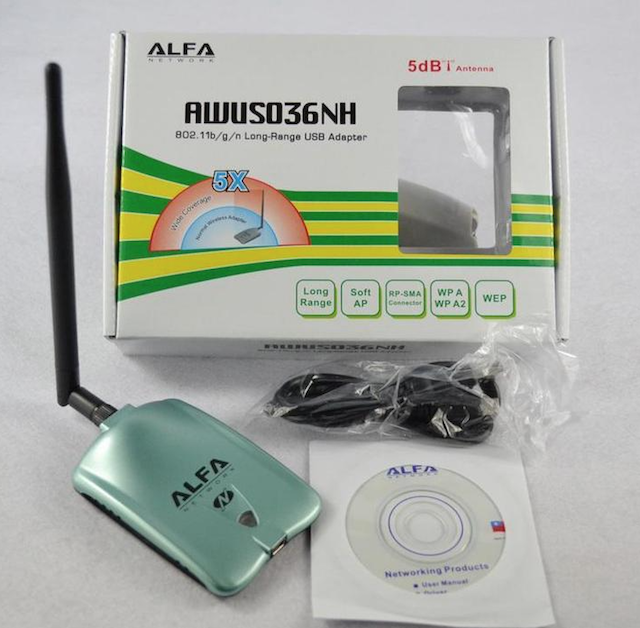
AWUS036ACH
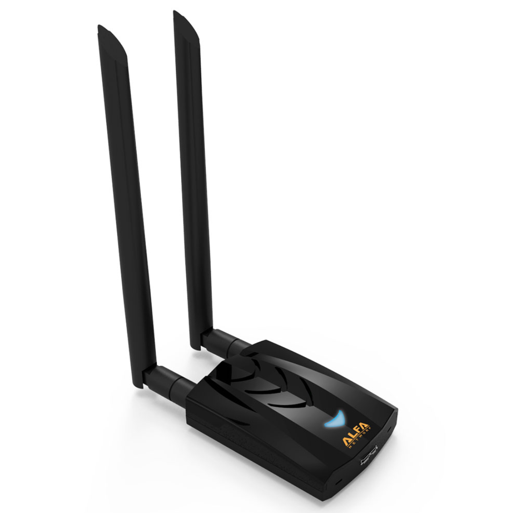
当您考虑购买不同的天线时，您需要了解一些事项。
假设您想连接到街对面的邻居 Wi-Fi 网络，那么在这种情况下 7dBi 或 9dBi 天线会好得多。7dBi-9dBi 天线并不大，可以轻松隐藏在提供良好范围的单肩包或背包中。最终，您将需要其他天线来增加您的 Wi-Fi 连接范围，例如室外天线和抛物面天线。您为本课程购买的 Alfa 网卡附带的库存天线就足够了。这些天线看起来像：
“八木”天线以远距离连接到 Wi-Fi 网络而闻名，并广泛用于黑客社区。这些最适合远距离定位 Wi-Fi 网络时。它们通常看起来像：
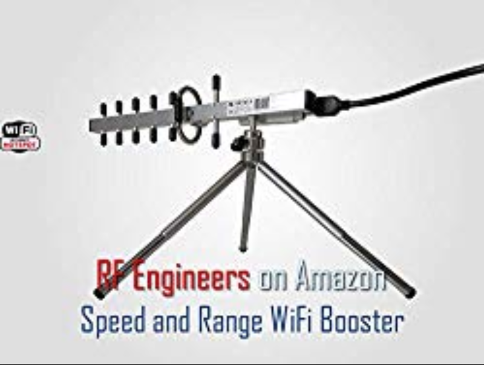
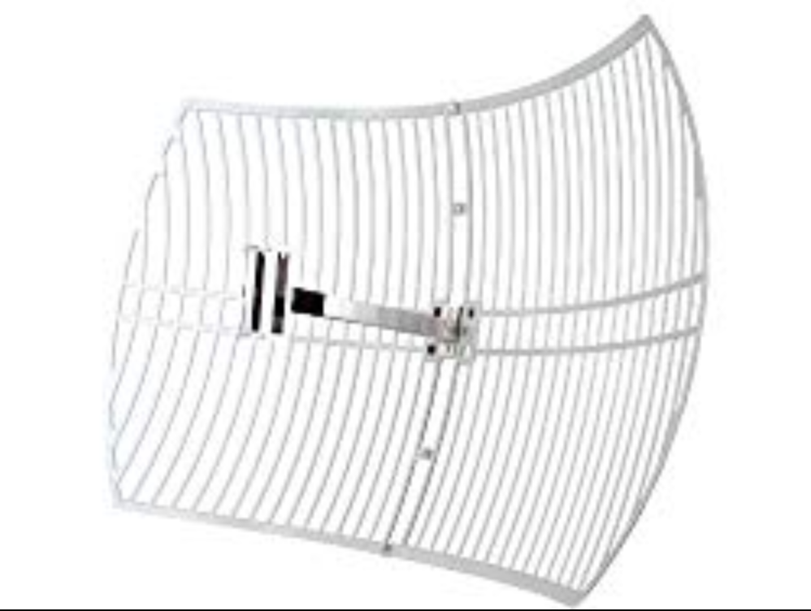
打开下面的链接并在页面上搜索“战争驾驶”（CTRL + F）并阅读该段落。当你读完这一段时，从头开始阅读整篇文章。
**
**
如果您确实购买了更好的天线，请尝试尽可能地隐藏它，因为在咖啡店时从每个口袋中都伸出天线并不是现在真正“混合”，是吗？想象一下，有人认为他们在公共 Wi-Fi 上的互联网连接有些奇怪，看到有人带着奇怪的天线，笔记本电脑上贴着贴纸，戴着高礼帽，坐在那里看着不好。只是不好。融入其中。保持您的笔记本电脑外观干净，保持专业，并且看起来像一个坐在咖啡店里的普通用户，一事无成。无需在您的笔记本电脑上贴上“我爱 H4X0R5”的贴纸。保持平庸的外表，不要和任何人谈论你的活动。披着羊皮的狼。
现在您已经了解了所需的设备并订购了 Alfa Wi-Fi 网卡，我们现在可以开始入侵 Wi-Fi 网络了。当您拥有合适的装备时，您可以继续下一章。
第三章
先决条件
要输入到终端或命令行中的代码的语法将为RED****RED 中的
最好有 (2) 个能够注入的网卡。
您的计算机拥有的内存越多越好，因为能够同时运行多个 VM 是非常有益的。当您运行 VM 时，您将一些 RAM 专用于这些机器，并且每个人都希望平稳运行。如果您计划拥有多个虚拟机，硬盘空间也很重要，因为每个虚拟机最多可占用 10GB。
*下载 Kali VirtualBox***https://www.kali.org/get-kali/#kali-virtual-machines
**
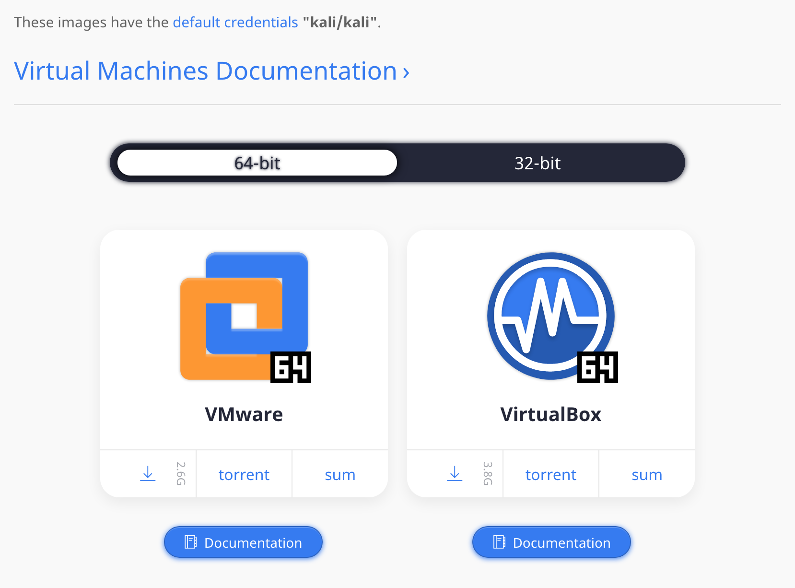
确保选择 VirtualBox 映像而不是 VMWare 映像！
下载 Kali 的 64 位或 32 位版本。这对每个人来说都是不同的，所以如果你下载的一个没有加载 Kali，那么另一个会加载，现在你就会知道了！;) 如果 Kali 启动并且您在 Kali 桌面，那就太好了！
如果您无法运行这些 VirtualBox 文件中的任何一个，那么您可以尝试下载 .iso 文件并以这种方式创建一个新的 VM。如果这些方法行不通，恐怕您的计算机就无法达到兄弟姐妹的标准。
好的，这部分会因人而异，具体取决于您购买的网卡。如果您购买了AWUS036NH网卡，请
此处
AWUS036NH 网卡设置说明。
Kali 启动后，您会看到 Kali 桌面，依次单击“设备”和“USB”，最后选择“Realtek 802.11n NIC”适配器将 Alfa 网卡连接到 Kali VM。每次插入 Alfa 网卡时，您都必须连接它才能使用它。
完成后单击继续。
关闭 Kali 然后在 VirtualBox 中选择 Kali VM 并单击 - 设置 - 端口 - 在 USB 3.0 上选择“启用 USB 控制器”，然后单击“确定”
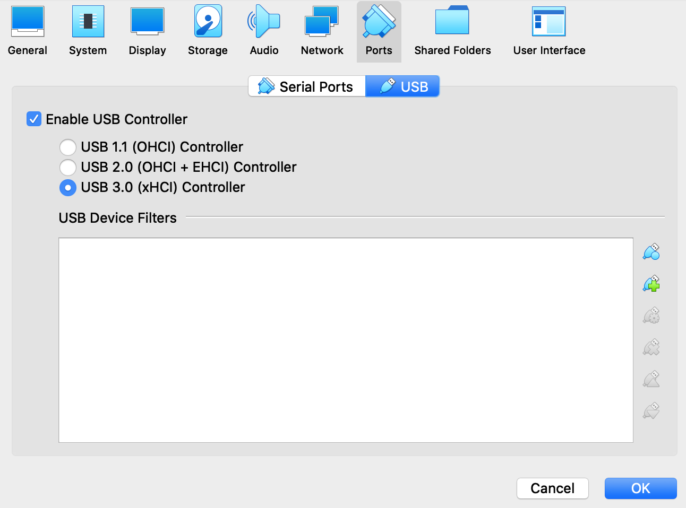
重新启动 Kali
要执行此操作，请在终端的 Kali 中键入以下内容：**sudo apt-get update
sudo apt-get install realtek-rtl88xxau-dkms -y
sudo shutdown -r now
**
您的 Alfa 网卡已正确安装并准备好造成严重破坏，因此请单击继续。
继续….
升级你的狗屎女士们先生们。
确保您已连接到主机上的 Internet 并在 Kali VM 中打开终端。如果您不知道终端在哪里，请使用 Kali 中的搜索功能搜索它。
打开一个新终端并输入：sudo apt-get update && sudo apt-get dist-upgrade -y && sudo apt-get install vsftpd lighttpd isc-dhcp-server hostapd-wpe dnsmasq hcxtools pkg-config libcurl4-openssl-dev libnl- 3-dev hostapd zlib1g-dev libnl-genl-3-dev libssl-dev python3-pip -y && sudo apt autoremove -y如果在运行上述命令时出现任何错误，例如：“E:然后在再次运行上述命令之前运行这些命令：sudo rm /var/lib/dpkg/lock-frontend
sudo rm /var/lib/dpkg/lock
sudo rm /var/cache/apt/archives/lock一旦你运行这些命令您可以成功运行上述更新命令。
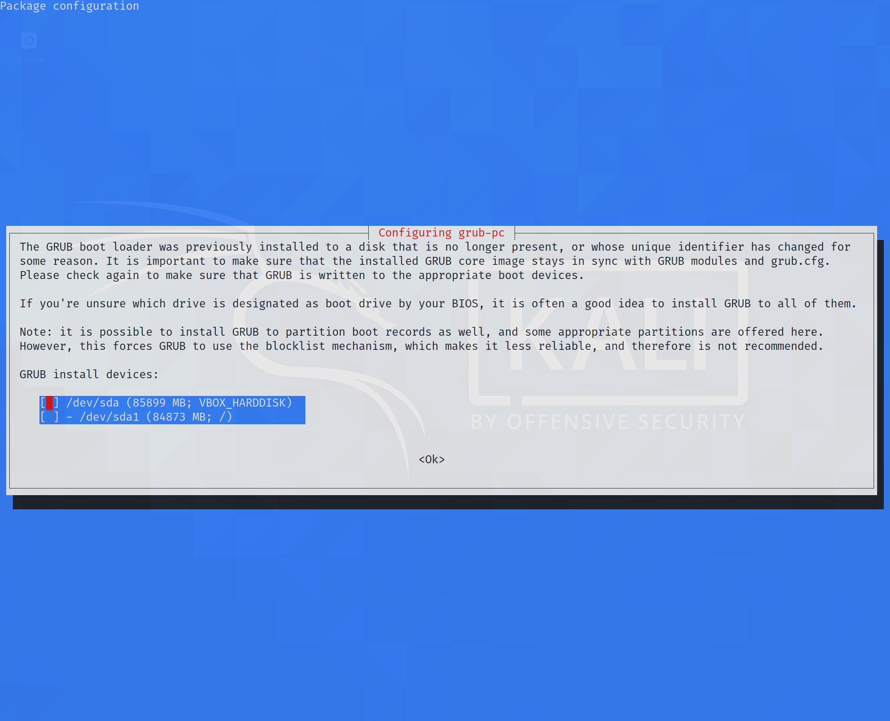
完成后，在终端中运行以下命令：**git clone https://github.com/wifiphisher/wifiphisher.git
cd wifiphisher
sudo python3 setup.py install
cd ..
sudo git clone https://github.com/ZerBea/hcxdumptool .git
cd hcxdumptool
sudo make
sudo make install
cd ..
sudo rm -r hcxdumptool
sudo rm -r wifiphisher
sudo gzip -d /usr/share/wordlists/rockyou.txt.gz
如果您有兴趣进一步提高您的“黑客”知识，您应该开始研究 Kali Linux 及其上的程序。不要被 Kali 中可用的工具数量以及您缺乏相关知识所淹没，而是尝试并专注于您感兴趣的东西。成为黑客或网络犯罪分子需要时间，并且需要您像其他人一样学习，然后才能一步一步地学习。
只需放松并尝试了解基础知识。一旦你掌握了基础知识，你就可以继续前进，因为如果你不放慢速度，你会被呈现给你的大量信息所淹没和沮丧。
请记住，这不会在一夜之间发生，通过学习如何增加 OPSec 以及如何破坏 Wi-Fi 网络是摆脱麻烦的重要一步，所以让我们现在只关注这一点。
第四章
入侵 Wi-Fi 网络
我不会解释有关 WEP、WPS 和 WPA/WPA2 WiFi 网络的每一个技术细节，而是将您引向一个很好的资源，因为这个主题已经在互联网上的许多黑客论坛上被解释得非常彻底。
然而，互联网上的大多数 Wi-Fi 黑客信息已经过时，或者人们只是不知道他们在谈论什么，这可能会导致在尝试学习这些狗屎时感到困惑。此外，Kali 已经更新，一些在黑客论坛上流传的语法不再有效，这使人们陷入错误信息的泥潭。如果我是某个群组或论坛的成员，并且看到“我如何破解 Wi-Fi 网络？” 贴出我简直不敢相信地拉裤子了。特别是在暗网黑客论坛上。比如你他妈是怎么到这里来的？
单击下方以在 YouTube 上观看 Wi-Fi hacking megaprimer 并观看第 26 部分。如果您愿意，可以跟随 SecurityTube Megaprimer，但请注意某些攻击已过时。
**
**您应该已经购买了上一章中介绍的所需 Wi-Fi 黑客设备（网卡和可选的相关天线）才能继续学习本课程。如果您还没有购买所需的物品，您应该立即购买，因为没有合适的设备跟随本章是浪费时间并且无法完成。
打开 VirtualBox 并启动您的 Kali VM。一旦 Kali 完全启动，将您的 Alfa 网卡一次插入您的笔记本电脑，一旦您将它们插入，请转到文件 - 设备 - USB 适配器以选择 Alfa Wi-Fi 网卡并确保它有一个复选标记在它旁边确保它连接到 Kali VM，以便我们可以使用它。
推荐的 Wi-Fi 黑客工具
您将需要 (2) 个无线网卡（Alfa 卡）才能最大限度地发挥下一个方法的作用。如果您只有 (1) 张 Alfa 网卡，则您可以攻击的内容将受到限制。
每次发起 Wi-Fi 攻击时都应运行“sudo airmon-ng check kill”，以确保没有其他应用程序会干扰我们的攻击。每次计划入侵 Wi-Fi 网络时都这样做的好习惯。
在 Kali VM 中：sudo airmon-ng check kill
sudo wifite选择要使用的Wi-Fi网卡，让wifite工具运行60秒左右。完成后按 CTRL+C 并选择您要定位的 Wi-Fi 网络。wifite 工具的一个不错的功能是，您可以告诉 wifite 攻击您周围区域内的“所有”Wi-Fi 网络，而不是专门针对一个 Wi-Fi 网络。由于此工具是自动化的，因此您可以在 wifite 在后台工作并处理您周围所有悬而未决的果实时放松并做其他事情。非常好！变高！
让 wifite 尝试破解您告诉它要定位的 Wi-Fi 网络，如果它确实捕获了 4 次握手，它将尝试针对密码的默认词表，希望能破解密码。然而有时默认的单词列表不够好，你想使用更大的东西。
如果您在破解 Wi-Fi 密码时绝对需要 %110，则可以使用以下更多单词列表：**https://weakpass.com/wordlist
**
你住的任何酒店、你坐的咖啡馆、你去的朋友的地方，或者任何你有可能使用互联网连接的地方，你应该尝试入侵你周围的每个 Wi-Fi 网络，这样你就可以使用多个网络当在线造成他妈的破坏时。这样做是因为您希望拥有多个 Wi-Fi 网络来满足您自己的需求。您可以访问的 Wi-Fi 网络越多越好。一旦您开始将越来越多的 Wi-Fi 网络添加到您的列表中，您就可以开始在不同的日期和时间使用每个 Wi-Fi 网络。如果您住在人口稠密的城市地区，最好拥有 50 多个 Wi-Fi 网络，并且每天、每隔一天等使用不同的网络。在不知不觉中，您将能够登录到一个 Wi-Fi 网络你赢了’ 超过 2 个月不能再次登录。为您的“业务”活动不断变化的位置和 Wi-Fi 网络使您很难找到是否有人参与您的活动。保持移动。
建立您的 Wi-Fi 网络帝国！如果您旅行或经常四处走动，您就会明白为什么这很重要，这对您的匿名性更好，并使您成为一个很难跟踪的目标。想象一下找到和跟踪你需要多少时间和人力？与此相关的财务成本意味着您必须成为一个值得花费时间、金钱、努力和最坏情况的目标，因为他们尝试跟踪一个又一个 IP 并将您与某个地理区域、被黑客入侵的 Wi-Fi 网络或公共 Wi-Fi。再说一次，如果你经常走动、旅行或经常移动，那对你来说就更好了。
。在成功定位 Wi-Fi 网络时，信号强度非常重要。您和目标 Wi-Fi 网络之间的物理障碍可以并且将会干扰您的攻击。仅仅因为您在使用这些程序时看到的信号强度很高，有时可能会产生误导，因此当您看到 %100 信号强度时请保持开放的心态。如果您无法对 Wi-Fi 网络发起攻击，可能是因为墙壁、金属、其他无线电干扰、物体等原因。
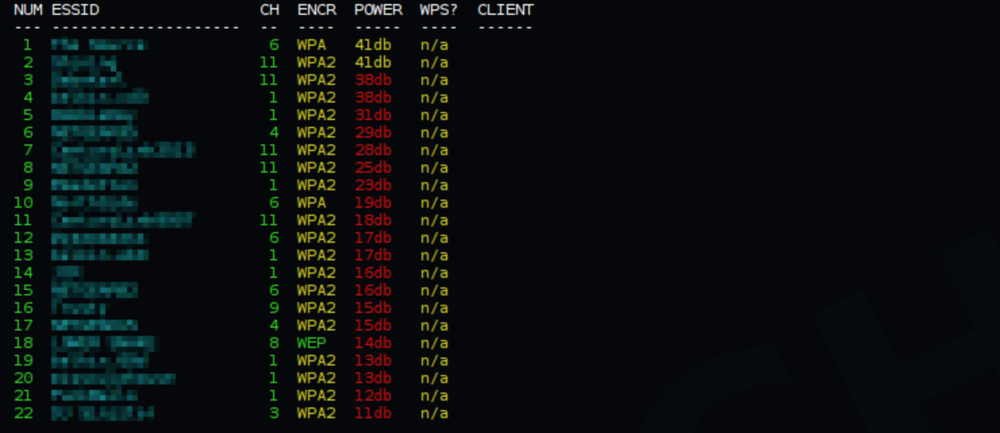
您很快就会发现一些由于其复杂性而无法破解的密码（即：密码“12wedsW24#5$ETRgerfsf”）。如果他们使用了正确的密码来保护它，则无法破解 WPA/WPA2 密码是很常见的。如果您绝对需要访问 Wi-Fi 网络并想在放弃之前尝试一切，您可以下载大量 WPA/WPA2 词表。我们可以通过使用 hashcat 破解 WPA/WPA2 密码来做到这一点。
如果你真的想进入那个网络，那么你需要使用一个非常大的词表，让它使用你的 GPU 来破解密码。为此，您可以从本章提供的链接下载 hashcat 和大量 WPA/WPA2 词表。
wpaclean NEW.cap handshake.cap我用 wifite 的 WPA/WPA2 握手保存了 .cap 文件，并将其命名为“handshake.cap”。你的当然会有所不同。示例：*wpaclean New.cap 握手.cap
*
**aircrack-ng -j hashcat.hccapx New.cap
**
hashcat -m 2500 hashcat.hccapx WORDLIST-m 2550 指定在这种情况下与 WPA/WPA2 相关的哈希文件类型。
如果您无法破解它，那么您将需要进行“邪恶双胞胎攻击”以欺骗用户输入他们的 WPA/WPA2 密码。您将在下一章中了解这一点。如果您想了解破解 Wi-Fi 网络的旧手动方法，请单击下面。
第五章
当您无法破解 Wi-Fi 网络时
一旦词表用尽，就该使用其他资源来破解密码了。最好将密码破解外包给可以利用更多 CPU/GPU 能力的在线服务，然后你会想要自己投资购买。最终，您可以设置一个单独的桌面专门用于密码破解，但这在今天并不是真正必要或需要的，而且太贵了。
如果您选择下载和使用它们，这里有一个包含许多大型词表的网站。https://weakpass.com/wordlist
好吧，如果您一直在入侵 Wi-Fi 网络或刚刚学习如何入侵它们，您很快就会意识到您无法入侵遇到的每个 Wi-Fi 网络。这意味着您已经尝试攻击 WEP 和 WPS，您已经针对您的武器库中的每个词表运行了带有 WPA/WPA2 握手的 .cap 文件，并且您已经使用在线专用服务来破解 WPA/WPA2 密码，但您仍然’无法破解 Wi-Fi 密码。有时您会想要并需要更多网络或想要访问某个网络，因此您需要弄清楚如何完成这项工作。
请记住，您离目标 Wi-Fi 网络越近，发起这些攻击的成功机会就越大。您想成为这种攻击正常工作的最佳和最隐蔽的传输信号。这个非常重要。因此，您要么与您试图用更好的天线入侵的网络处于同一区域，要么您有一个直接瞄准目标区域的定向/抛物线。同样，您的目标是成为最强大的传输动力源，以便人们轻松地与您联系。
当您对 Wi-Fi 网络进行 DoS 攻击时，这将导致真正的“家庭 Wi-Fi”网络瘫痪，并将连接到它的每个人都脱机。连接到“HOME-Wi-Fi”网络的人们最终会注意到他们不再有互联网连接，并且他们的 Wi-Fi 被关闭了。你不会注意到这一点吗？当您的家庭网络上没有 Wi-Fi 连接时，您会怎么做？你会怎么拍？在这种类型的 Wi-Fi 攻击中，我们的目标是人，与技术本身无关，被称为 EvilTwin 攻击。我们正在对知道我们想要的密码的 Wi-Fi 网络所有者使用社会工程 101。
现实情况是，如果他们想要互联网，他们最终会连接到您的恶意接入点。也许他们不会马上就知道，但大多数用户并没有那么聪明、冲动和不耐烦。大多数“普通”用户会感到沮丧，即使他们有疑问也会经历这个过程。普通用户会连接到网络，即使他们花时间打电话给他们的互联网服务提供商 (ISP)，他们的 ISP 也会告诉他们他们的互联网工作正常。它是哪个。看到这是他们的路由器的问题，他们会建议联系他们的路由器制造商或连接到具有相同名称的新开放网络，以查看是否有效。几乎所有时间，技术人员都会告诉他们登录到开放网络以排除连接故障。一世’
Wifiphisher
“Wifiphisher 是一个流氓接入点框架，用于进行红队参与或 Wi-Fi 安全测试。使用 Wifiphisher，渗透测试人员可以通过执行有针对性的 Wi-Fi 关联攻击，轻松实现针对无线客户端的中间人位置。Wifiphisher可进一步用于对连接的客户端发起受害者定制的网络钓鱼攻击，以获取凭据（例如，来自第三方登录页面或 WPA/WPA2 预共享密钥）或用恶意软件感染受害站点”。
让 Wifiphisher 扫描空气几分钟以获取所有可能的信息。准备好后，选择您计划定位的 Wi-Fi 网络。最好以信号强度最好的 Wi-Fi 网络为目标，并且有客户端连接到它以最大化所有攻击。
选择目标 Wi-Fi 网络后，选择“固件升级页面”。
接下来 Wifiphisher 将取消对连接到目标网络的每个人的身份验证。
我建议对您自己的 Wi-Fi 网络使用此攻击，以确切了解您的受害者将如何被提示进行此攻击。
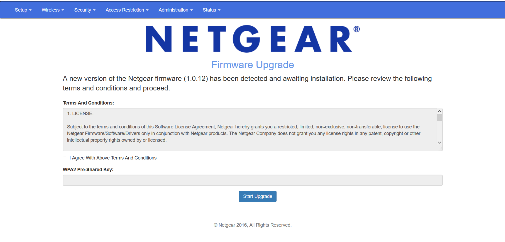
一旦他们输入了 Wi-Fi 密码，它将显示在运行 Wifiphisher 的终端窗口中，受害者将看到一个更新屏幕。如果 Wifiphisher 没有自动避免引起怀疑，您将希望在捕获密码后的 1-2 分钟内消除这种攻击。
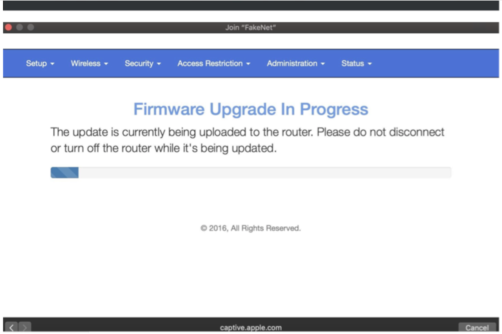
检查 Wifiphisher 正在运行的终端屏幕并 谁连接到您的流氓 Wi-Fi 网络非常重要，因为您不想整天关闭目标 Wi-Fi 网络并让他们呼叫他们的 ISP。您希望他们连接，输入凭据，然后您希望关闭将再次启动他们的 Wi-Fi 网络的攻击。Wifiphisher 应该自动执行此操作，但如果它不能确保您按 CTRL+Z 执行此操作。时机是关键，不要引起怀疑，但老实说，这取决于你的目标是谁。不要在早上发起攻击，然后让它整天/晚上都在运行，因为这可能会成为一个问题。
如果您想使用自己的自定义网络钓鱼页面，则可以输入：sudo wifiphisher -pPD path_to_your_web_files
第六章
增加力量！
在入侵 Wi-Fi 网络时增加成功机会的另一种技术是增加 Alfa 网卡的传输功率以将其榨干。在发起 Wi-Fi 网络攻击时，最好是对您正在攻击的目标进行最隐蔽和最强的信号。根据您使用的 Alfa 网卡，本章可能对您有益，也可能无益。如果不是因为每张牌的反应都不同，请不要乱扔垃圾。
大多数 Alfa 网卡能够产生 1 WATT 的功率以增加 Wi-Fi 网卡的范围，但默认情况下在 Kali 中没有设置这样做。我们可以通过将卡的传输功率设置为最大来调整这个狗屎并增强我们的信号以获得最佳连接！有些人可能拥有能够执行此操作的 Alfa 网卡，而其他人则没有，具体取决于您购买的那一张。如果您在此过程中遇到错误，那么您不会 ;)
在 Kali 打开终端并输入：sudo iw reg set GYThis command will set the region of your Kali machine to Guyana. Each country allows specific Wi-Fi regulations and by setting our OS host country to Guyana will allow us to increase the power beyond what is allowed in other countries. Certain countries don't want you to operate on certain channels whereas others do not have strict gudelines. By setting the country of our machine allows us to set different settings accordingly.
sudo ifconfigFind your wireless card interface.
sudo iwconfig INTERFACE txpower 30 sudo iwconfig INTERFACE sudo ifconfig INTERFACE up Wi-Fi 网卡的功率在维持和提高该 Wi-Fi 卡的信号强度方面起着重要作用。功率通常以 dBm 或瓦特为单位进行测量。增加功率提供的增益只是一种方式，但这意味着增加 Wi-Fi 卡的功率只会提高传输强度，而不会提高其接收强度。 您会在下面的屏幕截图中注意到我的 Alfa 网卡默认设置为“Tx-Power=20 dBm”的功率级别，这并不是网卡的全部潜力。 This will set the max power to 1W if your network is capable of this.**
**
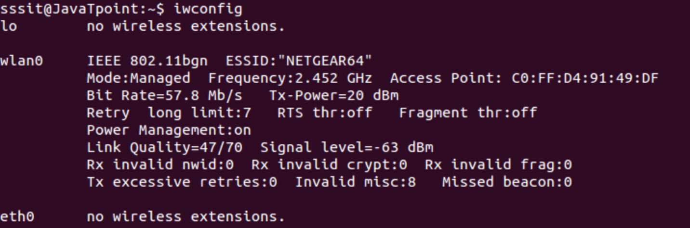
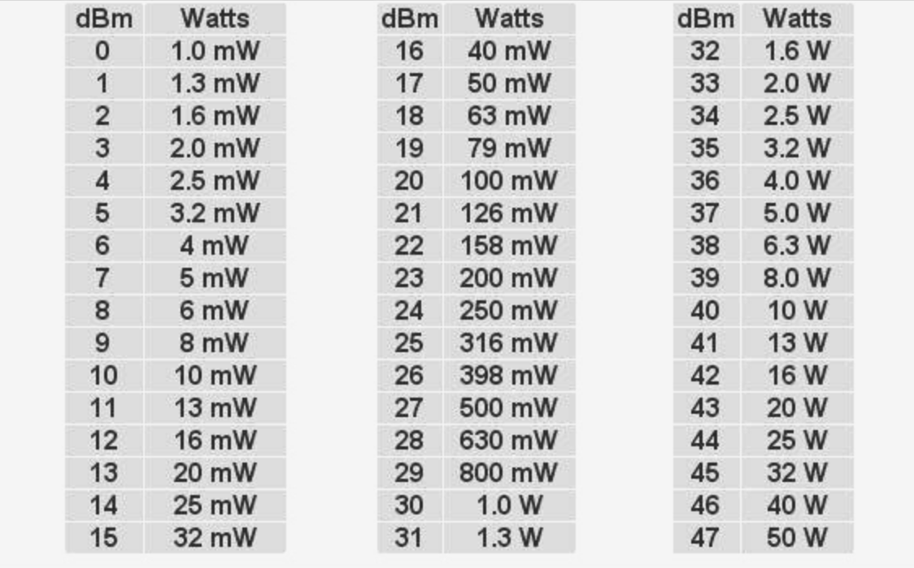
通常已经连接到家庭 Wi-Fi 网络的人，他们的计算机会更喜欢信号最强的无线网络，只要它之前连接到该 SSID。因此，如果我们能够识别此人正在探测的其他网络，并且我们可以提供更好的信号，我们或许能够让他们连接到您的 AP，这在发起 EvilTwin 攻击时很重要。
第七章
定位接入点 (AP)
如果您想充分利用本章内容，您需要购买另一个 Wi-Fi 天线才能充分利用本章内容。这不是 %100 必需的，但它会帮助您前进并让您更好地了解在被黑的 Wi-Fi 网络上如何跟踪您。有些人可能会实现这一点，有些人可能不会。
我们要购买的天线如下图所示，我们需要这种类型的定向天线来帮助确定 Wi-Fi 网络信号的来源位置，以提高我们的成功率。 Wi-Fi 攻击。
请记住，成为最强大的信号是理想的以最大化任何类型的 Wi-Fi 攻击。我们可以通过几种方式实现这一点。
显然，如果您与 Wi-Fi 路由器坐在同一个房间，这将是理想的、最佳的信号强度。实现这一点的第二种方法是增加网卡本身的传输功率。我们可以增加阿尔法网卡的信号传输功率，让它成为野兽，成为身边信号最强的。我们知道，当您计划攻击目标 Wi-Fi 路由器时，尽可能靠近目标 Wi-Fi 路由器很重要，无论是执行 DOS 以使路由器脱机，还是在发起 EvilTwin 攻击时成为其他人将连接到的最强信号。
显然，当您针对其他人的 Wi-Fi 网络时，这将是不可能的，因为您不知道路由器在他们的家庭/企业中的物理位置，这会使您难以确定您是否受到攻击是有效的。我可以保证，有时您会尝试入侵 Wi-Fi 网络而没有成功，因为您距离太远而无法对您所针对的人产生任何影响。意思是，你
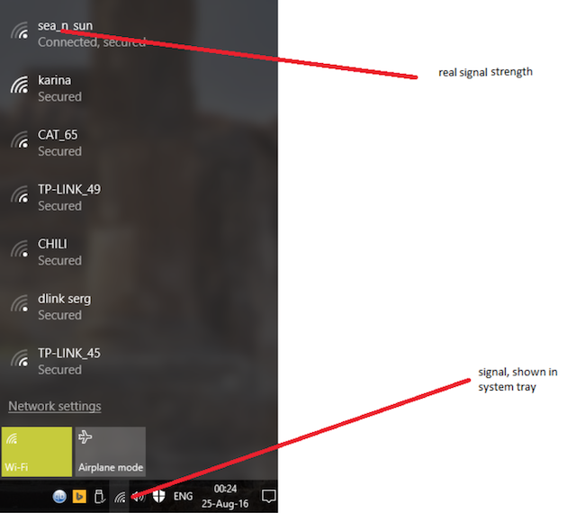
我知道有时候狗屎根本不起作用，您无法根据您的技能水平检查它是否正常运行。
您的攻击是否对特定目标不起作用，因为它们没有落入您的社会工程混蛋？B)
您离 Wi-Fi 路由器太远了吗？
请记住，您的主机笔记本电脑 Wi-Fi 网卡将显示与您的 Alfa 网卡不同的 Wi-Fi 网络，因为它们显然是具有不同硬件规格的不同网卡。根据您想要连接到互联网的方式，您需要确保主机 Wi-Fi 卡比 Alfa 显示的信号更好。当然，可以使用 Alfa 网络连接到 Wi-Fi 网络，但根据您的设置，您可能更喜欢将主机连接到 Wi-Fi 网络，然后启动 Whonix VM 或使用 Tails 中的 Alfa 网卡进行连接到远处的 Wi-Fi 网络。
**让我们看一个例子：
**
也许您想在家里舒适地“工作”，所以您决定妥协您周围的每个 Wi-Fi 网络，而这正是大多数人最终会做的事情。这样您就可以保持静止，但可以放心地知道您没有使用自己的 Wi-Fi 网络。不推荐这样做，但有时您只是不想离开酒店或床，因此您将定向天线对准街道并破坏距离您 100 米的 Wi-Fi 网络。;)
**这是另一个例子。
**
我记得那天我会对 Wi-Fi 路由器发起 DoS 攻击，以关闭路由器，这样我就可以发起 EvilTwin 攻击，但无法关闭路由器。当时我没有意识到我离路由器太远，有多个物理障碍，这些障碍可能会破坏我和 AP 之间的 Wi-Fi 信号，这导致了我的失败。您可能带着笔记本电脑四处走动，寻找最佳信号并找到一个，但您没有意识到 Wi-Fi 信号会从墙壁和其他东西上反弹，让您对 Wi-Fi 信号强度产生错误的感觉。这将使您与网络的连接变得糟糕，同时成功破解它的机会也会减少。
当我第一次接触 Wi-Fi 黑客时，这实际上花了我一些时间来弄清楚这有多重要，直到我被聘为专业的网络安全顾问，我才了解到这的重要性和所需的技术最大限度地提高我的 Wi-Fi 攻击成功的机会。
在第 2 章中，我们简要讨论了不同的天线以及当您觉得需要升级时应该如何升级。当您购买 Alfa 网卡时，它会附带一个小型全向天线，可以用不同的天线替换。卡随附的天线是全向天线，当您不知道 Wi-Fi 信号来自哪里时非常有用，并且非常适合尝试连接到同一楼层/同一楼层的 Wi-Fi 网络你。
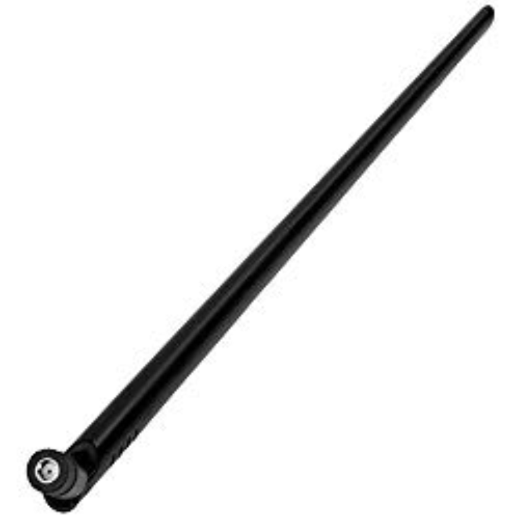
如您所见，全向天线非常适合连接到同一楼层的无线接入点，但不适合连接到其范围之外的任何网络。这就像一个甜甜圈系列，对吧？全向天线范围可以捕获、拦截和广播该甜甜圈形状内的信号，它们离天线越远，信号越弱。容易记住！
全向天线很难确定 Wi-Fi 网络信号的来源，因为每个方向的信号都是相等的，而定向天线可以帮助您专注于一个方向，从而帮助确定 Wi-Fi 网络信号来自哪个方向从。就像手电筒在黑暗中照出一些光！:)
使用正确的软件以及在空中扫过的定向天线将导致当天线指向 AP 方向时信号强度变强，而当定向天线指向远离信号时信号强度变弱。明显地。如果我们将天线对准信号，信号强度会增加，所以这是有道理的，我们可以使用它来确定 Wi-Fi 信号的确切来源。
如果您出现错误并且执法部门正在寻找您，因为您使用了如此多的不同 Wi-Fi 网络，那么跟踪您将更加困难，并且需要大量人力和财力来完成。入侵尽可能多的 Wi-Fi 网络，并根据您的偏执程度每月、每周或每天轮换它们。
如果您以前从未使用过 Wireshark 并且不熟悉它，您可以查看一些非常有用的 YouTube 视频或从亚马逊或 eBay 在线购买 Wireshark 书籍。有很多关于 Wireshark 的教程，我不会详细介绍该程序，因为这本身就是一本书。
人们还可以使用其他工具来追踪恶意 AP 或 Wi-Fi 网络，但我一直使用 Wireshark，我认为这是一个很好的学习工具，所以让我们坚持使用它。它非常易于使用，所以不要不知所措！一旦您了解了正确追踪您计划瞄准的 Wi-Fi 网络是多么的简单和多么重要，您就会一直使用这种技术来进行疯狂的 Wi-Fi 黑客攻击。
应该注意的是，我在 nullbyte 从 Kody 复制了这个确切的技术，因此支持他解释这一切。我总是发现很难向其他人解释它，因为我使用了从前任雇主那里偷来的专有程序，所以如果可以，请支持 Kody，因为这是他的工作。
当您按照以下步骤进行操作时，最好以您自己的 Wi-Fi 网络/路由器为目标，这样您就可以更好地了解如何使用 Wi-Fi 网络信号的强度正确找到另一个 AP。
对于本示例，我将使用“wlan1”作为我的界面，但您的界面可能有所不同。
我的例子：sudo airmon-ng check killsudo airmon-ng start wlan1sudo airodump-ng wlan1mon
CTRL+C
**
**
我们现在的 Alfa 网卡处于监控模式，在频道 1 上嗅探 Wi-Fi 网络流量我们已准备好启动 Wireshark。打开终端并输入以下内容：sudo wireshark &
一旦你选择了你的监视器网络接口，你就会在 WireShark 的屏幕上看到一堆数据。等待大约 20 秒，然后单击左侧工具栏上的红色 STOP 按钮停止捕获。
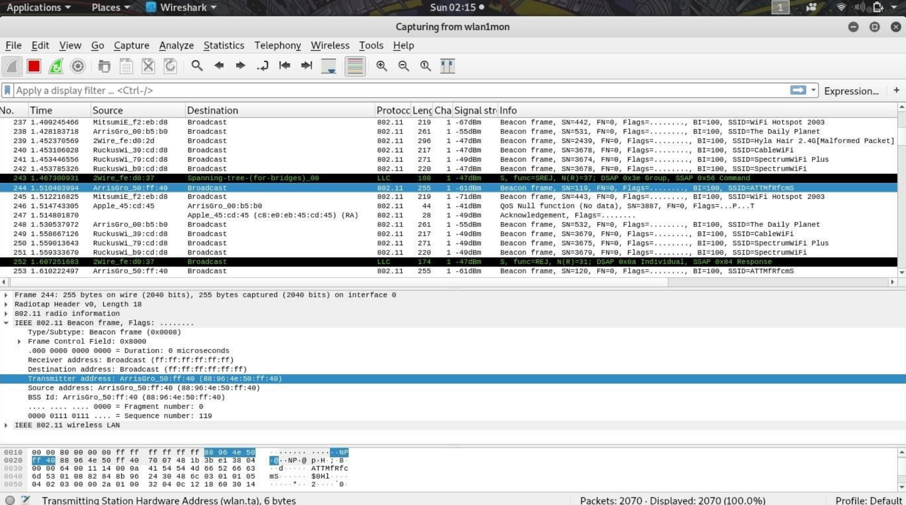
右键单击“发送器地址”以显示选项列表，然后选择“作为过滤器应用”，然后选择“已选择”以创建仅显示从该特定设备传输的数据包的显示过滤器。此过滤器将显示来自该目标网络的所有 Wi-Fi 传输，而不会显示来自无关网络的任何内容。
：我们首先确定了它所在的信道，然后我们在 WireShark 中创建了一个过滤器，以仅显示来自我们想要攻击的设备的数据包，从而隔离了我们所针对的 Wi-Fi 网络。一旦我们隔离了 Wi-Fi 网络信号，我们就可以切换到可视化信号强度，这将有助于我们定位 AP。再次，我希望您想象一下当有人在海滩上使用金属探测器但在空中挥舞天线以寻找 Wi-Fi 信号的功率强度时的动作！相同类型的概念和动作。
要启动信号强度的可视化图表，请复制我们已经用 WireShark 创建的显示过滤器（告诉过您这很重要），然后单击“统计”，然后单击“I/O Graph”以启动 WireShark 可视化信号窗口。加载后，单击加号 (+) 图标以创建新图表，并确保取消选中可能已启用的任何其他图表。
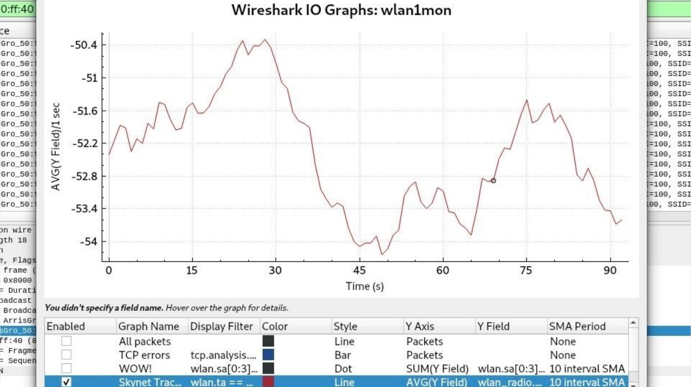
好的，现在退出 I/O 图并停止 Wireshark 捕获。将 Alfa 网卡天线远离 AP（最好面朝下放在地板上），然后重新启动 WireShark 捕获。重新启动 WireShark 捕获后，选择“Statistics”，然后选择“I/O Graph”以再次启动 WireShark 视觉信号窗口。现在我们有了一个新的图表和一个可以使用的基线。
好的，一旦您将 Alfa 卡面朝下放置 (10) 秒，用定向天线将其捡起，然后慢慢将其扫过您的位置并观察图表。我建议开始背对您自己的 AP，然后慢慢朝它旋转，同时观察图表上的尖峰，以指示 Wi-Fi 信号来自哪个方向！继续旋转它，直到它指向您的 AP。您应该能够检测到信号尖峰并开始定位 AP 的位置。一旦图表上出现尖峰，请保持稳定并走向信号并再次扫描以开始真正缩小 AP 位置！看看图表如何变化？！从不同的距离尝试这个，看看它是如何工作的，并对这种技术感到满意。
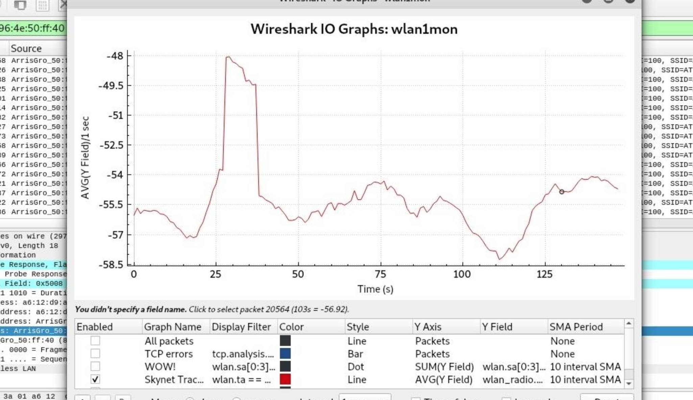
该尖峰是该特定方向上最强的信号。很明显，当你瞄准你自己的 Wi-Fi 网络时，你可以用天线走到 AP 的位置来测试信号强度。当定位到任何其他 Wi-Fi 网络时，这也没有什么不同。
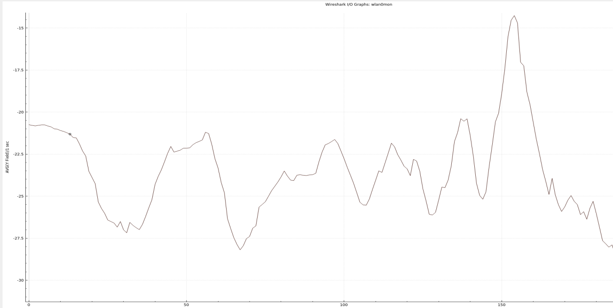
注意到上面屏幕截图左侧的功率级别了吗？-20-22.5-25
您还会在上面的屏幕截图中注意到，图表相当混乱，到处都有很多尖峰，但您可以看出其中一个尖峰存在差异，是吗？有时你的基线会到处都是，很难确定什么是什么。慢慢来，旋转天线，直到您可以从其他人那里看到明显的尖峰，然后将注意力集中在那个方向。就像你需要练习的任何事情一样，你练习得越多，你就会越舒服，这意味着你在发动攻击时越有效。
如果您有问题，下面的视频可以更好地解释这种技术。
第八章
WPA3 网络
由于 WEP、WPA 和 WPA2 协议都有自己类型的漏洞，像我们这样的攻击者会滥用这些漏洞，因此业界一直试图通过实施称为 WPA3 的新标准来更好地保护无线网络。
WPA3 于 2019 年创建并推出，但就我个人而言，我并没有真正遇到太多使用 WPA3 保护的网络，但本章旨在让您了解最新情况。
下面的屏幕截图快速回顾了 WPA/WPA2 协议如何保护无线通信。
WPA/WPA2 协议依赖预共享密钥 (PSK) 作为连接 Wi-Fi 网络的主要身份验证。WPA3 协议使用一种不同的身份验证方法，称为同步身份验证 (SAE)。如果您还记得破解 WPA/WPA2 Wi-Fi 网络密码时，我们通过捕获 4 次握手并使用大量字典词表来暴力破解密码是吗？我们可以在我们自己的时间离线完成这一切。希望这敲响了警钟。WPA3 使这不再可能，因为一旦 AP 注意到太多 SAE 请求，它就会使用令牌来限制尝试次数。最终，您对密码的猜测次数将受到限制，因此除非您计划永生，否则在线破解密码将不是一个现实的选择。
因此，我们现在知道从启用 WPA3 的网络破解密码是不现实的。EvilTwin 攻击怎么样？
PMF 可防止攻击者解除用户与网络的关联并使其看起来像是客户端当前连接到的接入点 (AP)。如果你对这他妈的什么意思感到困惑，这基本上意味着不再有针对 WPA3 设备的 EvilTwin 攻击。您无法取消连接到 WPA3 网络的某人的关联，因此您无法诱使他们连接到您的恶意接入点。狗屎没有发生。
围绕 WPA3 的 (2) 缺陷是降级攻击和侧信道泄漏，可被滥用以恢复 Wi-Fi 网络使用的密码，称为 CVE-2019-13377 和 CVE-2019-13456。
https://github.com/vanhoefm/dragonslayer
https://github.com/vanhoefm/dragondrain-and-time
第九章
结论
您应该熟悉本课程中讨论的内容，即使不是很熟悉。请记住，黑客攻击不会在一夜之间发生，因此最好不断练习以提高效率和效果。
您开设商店的每个地方都尝试尽可能多地接管该地区的 Wi-Fi 网络。我们知道您可以使用 wifite 定位“所有”网络，并让它在后台自动运行。您没有理由不能在喝咖啡的同时做到这一点。您能够使用的 WiFi 网络越多，对您来说就越好。没有什么比坐在咖啡店里使用街对面的 WiFi 发起攻击更好的了。尽可能使用不同的网络，并尽可能四处走动。在不知不觉中，您将拥有 30 多个 Wifi 网络可供使用。这将增加保持匿名的机会，并降低在发生某些事情时被抓住或跟踪到一个位置的风险。
以此知识为基础，HackTown 的下一门课程 ACT II 包括入侵 Wi-Fi 网络后该怎么做，以及如何针对网络上的个人获取利润和盗版。这包括最新的中间人 (MITM) 攻击、恶意软件传送和网络密码嗅探。
如果这对您来说是全新的，请在学习这里的所有内容时保持专注，并在继续之前确保您对所有内容感到满意。像任何大学、学院或任何其他学术界一样，事情不会在一夜之间发生，并且实际上期望这只是很长一段时间。不要迷失在兔子洞里。
风采
- 本文作者： 吔屎啦你
- 本文链接： http://example.com/2021/07/22/破解WIFI网络图片/
- 版权声明： 本博客所有文章除特别声明外，均采用 MIT 许可协议。转载请注明出处！